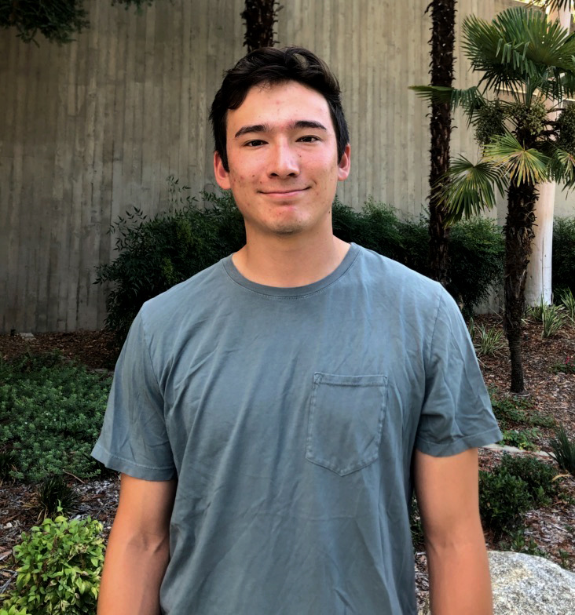
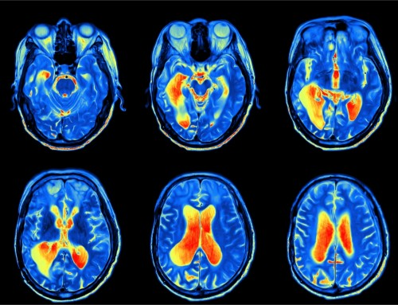

About Me

I'm currently a senior at Pomona College where I study neuroscience, computer science, and mathematics. Some of my interests include backend development, machine learning, and automation. I am graduating in May of 2020 and am looking to join an organization where I can continue to grow my skillset as an engineer.
In my spare time, I am captain of the baseball team and like to stay involved in research.
Experience
Boston Scientific - Software Engineering Intern
Worked with mobile development team developing backend services for mobile appications. Also completed a project for the data science team, building a text classification model to streamline complaint handling.
Acalynics - Tutor
Planned curricula and tracked progress for multiple students. Gained experience with conveying concepts to those with less knowledge base.
Research

I am currently completing my senior thesis in computational neuroscience, attempting to identify neural correlates of humor creation in professional comedians using fMRI and EEG. I am very fortunate to be working under Dr. Ori Amir and executing my research out of USC's image understanding lab.
Contact
If you'd like to get in contact, send an email to the address below!
Email
tsyoshihara18@gmail.com
Other Links